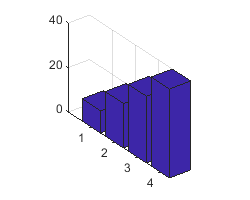
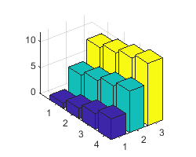
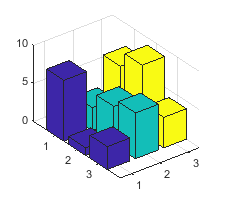
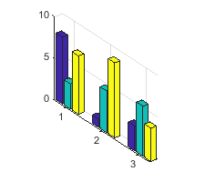
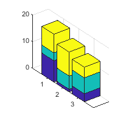

bar3
3-D bar graph
Description
bar3( creates a 3-D bar graph for the
elements of z)z. Each bar corresponds to an element in z.
To plot a single series of bars, specify
zas a vector. For a vector of length m, the function plots the bars on a y-axis ranging from1to m.To plot multiple series of bars, specify
zas a matrix with one column for each series. For an m-by-n matrix, the function plots the bars on an x-axis ranging from1to n and a y-axis ranging from1to m.
bar3(___, sets the width of
the bars along the x- and y-axes and controls the
separation of bars within a group. By default, width)width is
0.8 and the bars have a slight separation. If width
is 1, the bars within a group touch one another.
bar3(___, specifies the
style of the bars, where style)style can be 'detached',
'grouped', or 'stacked'. The default mode of display
is 'detached'.
bar3(___, displays all bars
using the color specified by color)color. For example, use
'r' to specify all red bars.
b = bar3(___)Surface objects. If z is a vector, then
bar3 creates one Surface object. If
z is a matrix, then bar3 returns a
Surface object for each series. Use b to set
properties of the bars after displaying the bar graph. For a list of properties, see
Surface Properties.
Examples
Specify z as a vector of five values. Plot these values as a series of 3-D bars, with the height of each bar corresponding to a value in z and its y-axis location corresponding to the index of that value.
z = [50 40 30 20 10]; bar3(z);

Specify z as a matrix. Create a 3-D bar graph of z with each series corresponding to a column in z.
z = [1 4 7; 2 5 8; 3 6 9; 4 7 10]; bar3(z)

Specify y as a vector of y-axis locations for the bars in z. Plot the bars at the specified y-axis locations.
y = [1950 1960 1970 1980 1990]; z = [16 8 4 2 1]; bar3(y,z)

Specify z as a matrix with three series. Plot z with the data for each row grouped together by using the 'grouped' style. To eliminate space between bars of the same group, set width to 1.
z = [70 50 33 10; 75 55 35 15; 80 60 40 20];
bar3(z,1,'grouped')
Create a set of y-coordinates ranging from 0 to . Plot sine functions of the y-values as a 3-D bar graph. Use the color specification 'r' to make the bars red.
y = 0:pi/16:pi;
z = [sin(y')/4 sin(y')/2 sin(y')];
bar3(y,z,1,'r')
Plot data matrix z with the bar style 'stacked' and bar width 0.5. Store the returned Surface objects as b. In this case, b has 4 elements, with one for each column in z.
Note that bar3 colors each series based on the default colormap.
z = [19 30 21 30; 40 16 32 12];
b = bar3(z,0.5,'stacked');
Customize the color of each series by setting the FaceColor of the corresponding object in b.
b(1).FaceColor = 'k'; b(2).FaceColor = 'white'; b(3).FaceColor = [.5 .7 .8]; b(4).FaceColor = [.9 .7 .8];

You can display a tiling of plots using the tiledlayout and nexttile functions. Call the tiledlayout function to create a 1-by-2 tiled chart layout. Call the nexttile function to create the axes objects ax1 and ax2. Create separate line plots in the axes by specifying the axes object as the first argument to bar3.
Display a stacked 3-D bar graph in the left axes. In the right axes, display a grouped bar graph of the same data.
tiledlayout(1,2) z = [64 56 48; 49 42 35; 36 30 24]; % Left bar graph ax1 = nexttile; bar3(ax1,z,0.5,'stacked') % Right bar graph ax2 = nexttile; bar3(ax2,z,1,'grouped')

Input Arguments
z-coordinates, specified as a vector or matrix. The dimensions of
z determine how the function displays your data. This table
describes the most common situations.
| Presentation | How to Specify Y and Z | Example | Result |
|---|---|---|---|
| Display one series of bars. |
| Define vectors y = [1 2 3 4]; z = [10 20 30 40]; bar3(y,z) Alternatively,
specify just the bar3(z) |
 |
| Display multiple series of bars stacked along the x-axis. |
| Define vector y = [1 2 3 4];
z = [1 5 9;
2 6 10;
3 7 11;
4 8 12];
bar3(y,z)Alternatively,
specify just the bar3(z) |
 |
Data Types: single | double | int8 | int16 | int32 | int64 | uint8 | uint16 | uint32 | uint64 | duration
y-coordinates, specified as a vector. The values of
y do not need to be in order, but the size of y
depends on the size of z and how you want to display your data. This
table describes the most common situations.
| Presentation | How to Specify Y and Z | Example | Result |
|---|---|---|---|
| Display one series of bars. |
| Define vectors y = [1 2 3 4]; z = [10 20 30 40]; bar3(y,z) Alternatively,
specify just the bar3(z) |
|
| Display multiple series of bars stacked along the x-axis. |
| Define vector y = [1 2 3 4];
z = [1 5 9;
2 6 10;
3 7 11;
4 8 12];
bar3(y,z)Alternatively,
specify just the bar3(z) |
|
Data Types: single | double | int8 | int16 | int32 | int64 | uint8 | uint16 | uint32 | uint64 | categorical | datetime | duration
Bar width, specified as a scalar representing a fraction of the total space
available for each bar. The default of 0.8 means the bar width is 80%
of the space from the previous bar to the next bar, with 10% of that space on each side.
If the width is 1, then the bars within a group touch one
another.
Example: bar3([1 2 3],0.5) creates bars that use 50% of the
available space.
Data Types: single | double | int8 | int16 | int32 | int64 | uint8 | uint16 | uint32 | uint64
Group style, specified as 'detached',
'grouped', or 'stacked'. The group style
determines how multiple series of bars display with respect to one another. If
z is a vector, style does not affect graph appearance.
This table shows the result of each group style option.
| Group Style | Result | Example |
|---|---|---|
| Display each bar at its corresponding x and y value location. |  |
| Display each group as adjacent bars that are centered around their corresponding y value. |  |
| Display each group as one multicolored bar. The length of a bar is the sum of the elements in the group. |  |
Bar color, specified as one of the options in this table.
| Color Name | Short Name | Appearance |
|---|---|---|
'red' | 'r' |
|
'green' | 'g' |
|
'blue' | 'b' |
|
'cyan'
| 'c' |
|
'magenta' | 'm' |
|
'yellow' | 'y' |
|
'black' | 'k' |
|
'white' | 'w' |
|
Axes object. If you do not specify an axes, then bar3 uses the
current axes for the bar graph.
Output Arguments
More About
Tips
The plotted bars can be modified by altering the properties of the returned
Surfaceobjects. For a list ofSurfaceproperties, see Surface Properties.